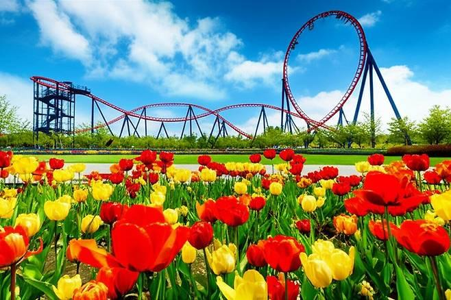
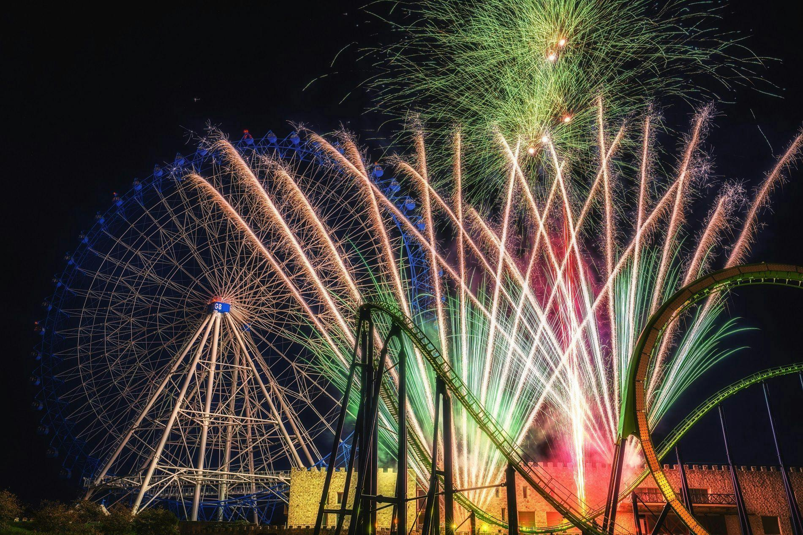
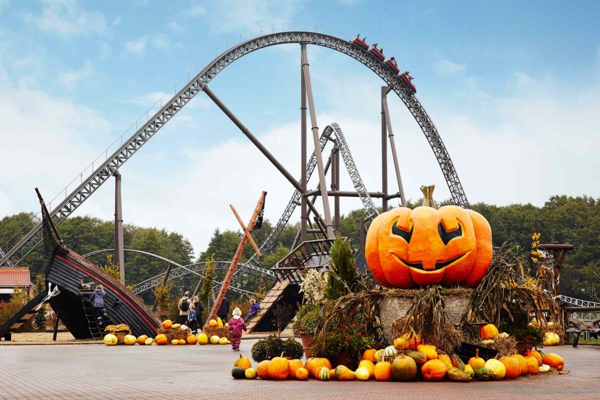
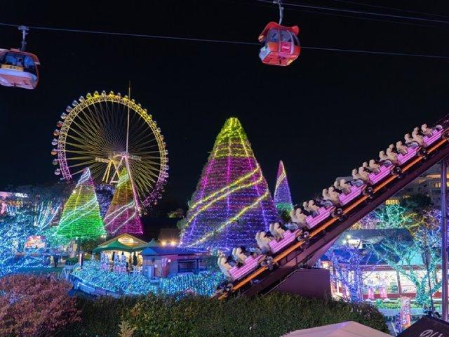

🌷Spring Flower Festival🌷

Welcome to the Spring Flower Festival at DreamStar Park! Celebrate the beautiful season of spring with colorful flowers, beautiful decorations, and fun activities for everyone. During this special event, the park becomes a wonderful place filled with the beauty of nature and the joy of spring. Visitors can enjoy exciting rides, take beautiful pictures, and spend a relaxing day with their family and friends. The festival is a great opportunity to enjoy the fresh spring atmosphere while exploring everything DreamStar Park has to offer. Bring your loved ones and make wonderful memories together at our Spring Flower Festival. We look forward to welcoming you to a beautiful spring celebration!
🎆Summer Fireworks Festival🎆

Get ready for an unforgettable summer at the Summer Fireworks Festival at DreamStar Park! This special event brings together exciting rides, fun activities, and a beautiful fireworks show to create an amazing summer experience for visitors of all ages. During the day, guests can enjoy thrilling roller coasters, family-friendly attractions, and delicious food throughout the park. As the sun goes down, the park becomes a magical place filled with beautiful lights and exciting entertainment. The highlight of the festival is our spectacular fireworks show. Watch the night sky light up with colorful fireworks and enjoy a wonderful evening with your family and friends. Whether you love exciting rides or relaxing under the stars, there is something for everyone at this special summer event. Come to DreamStar Park and celebrate the summer with us. Make unforgettable memories and enjoy a night full of fun, laughter, and beautiful moments!
🎃Halloween Night🎃

Welcome to Halloween Night at DreamStar Park! Get ready for a special Halloween celebration filled with colorful decorations, fun activities, and exciting attractions. During this event, the park becomes a magical Halloween world where visitors can enjoy a memorable day with family and friends. Explore the park and discover pumpkins, Halloween decorations, and special photo spots. Guests can enjoy their favorite rides, take pictures, and experience the fun atmosphere of Halloween. There are also special activities for visitors who want to enjoy a unique and exciting day at the park. Halloween Night is a wonderful opportunity to spend time with your loved ones and create special memories. Whether you are visiting with friends or family, you can enjoy the Halloween spirit and have a great time together. Come and celebrate Halloween at DreamStar Park! We welcome everyone to enjoy a fun-filled day and make wonderful memories this October.
🎄Christmas Magic🎄

Experience the magic of Christmas at DreamStar Park! Our Christmas Magic event is a special holiday celebration filled with beautiful lights, festive decorations, and fun activities for the whole family. The park becomes a wonderful winter wonderland where visitors can enjoy the holiday spirit. Take a walk through the park and enjoy the beautiful Christmas decorations and colorful lights. Guests can ride exciting attractions, take memorable pictures, and spend quality time with their loved ones. There are many fun things to see and enjoy throughout the holiday season. Christmas Magic is the perfect way to celebrate the end of the year and create unforgettable memories. Bring your family and friends and enjoy the warm and happy atmosphere of Christmas at DreamStar Park. Join us this December for a magical holiday experience. We look forward to celebrating Christmas with you and making this season special for everyone!